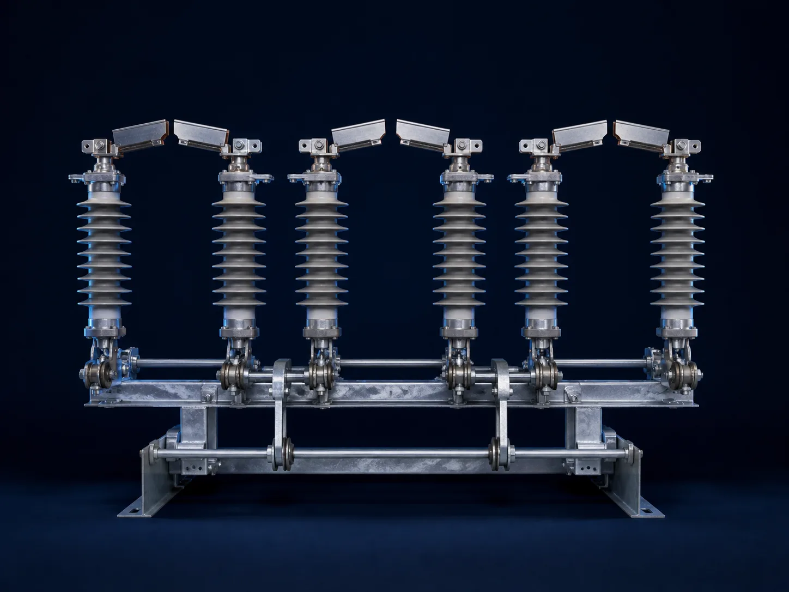
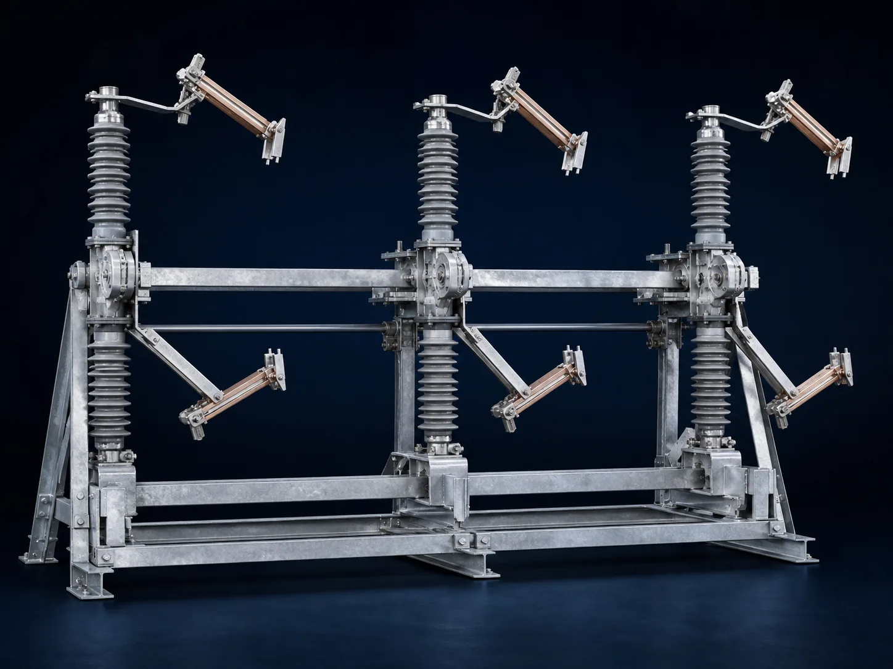
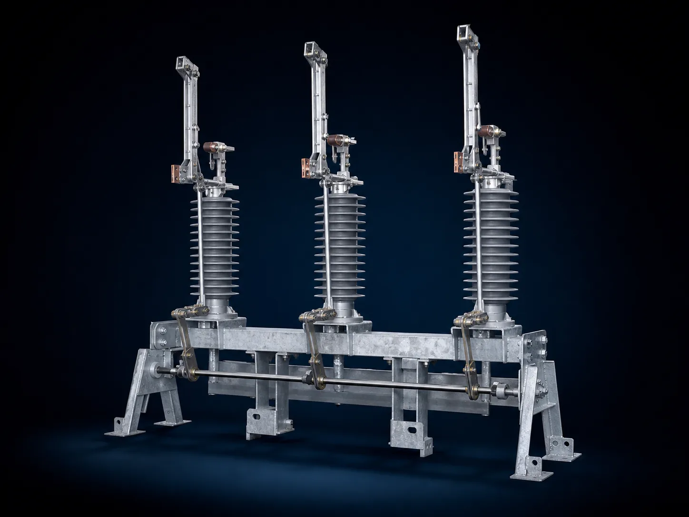
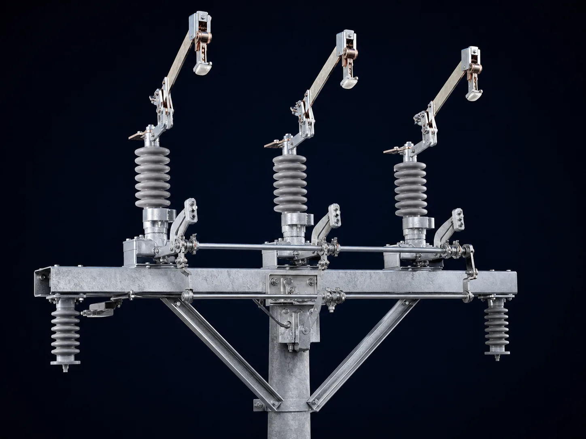
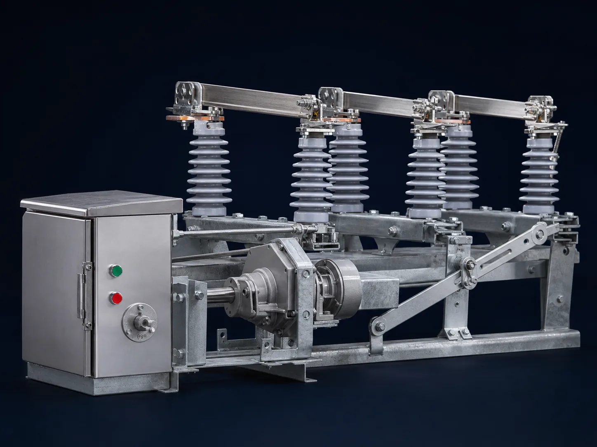
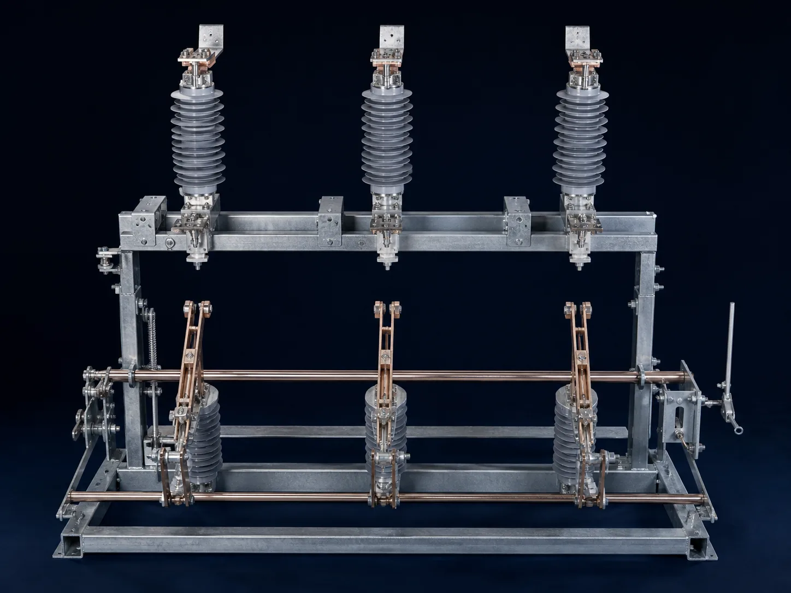
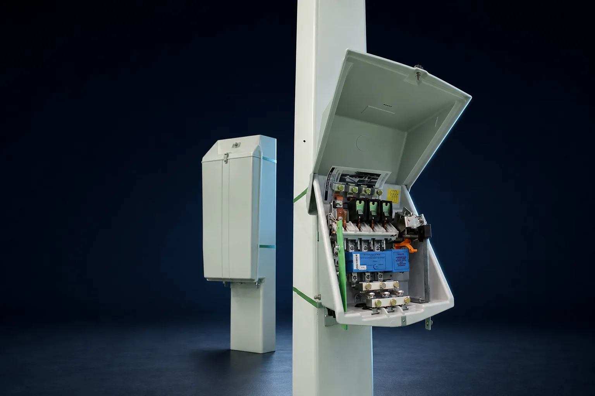
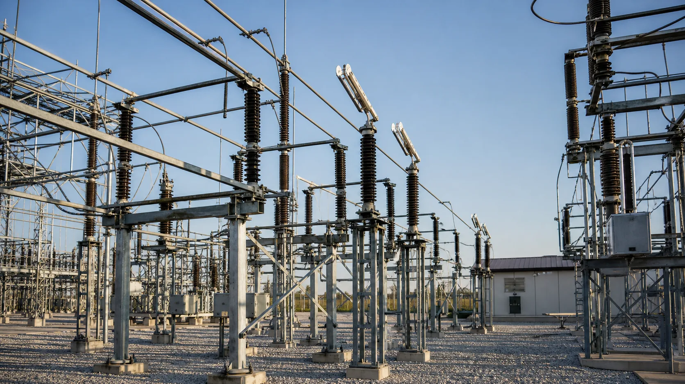

CB / PRIMARY
Center-break disconnector
Clear open position and balanced mechanical action for dependable line isolation.
OUTDOOR · MANUAL / MOTORIZED
Physical switching, isolation and transformer protection engineered into one field-ready digital catalog.
A focused range for overhead network sectioning, protection, maintenance and operational safety.

Clear open position and balanced mechanical action for dependable line isolation.
OUTDOOR · MANUAL / MOTORIZED
Compact phase spacing with symmetrical interruption geometry.

Vertical opening path where horizontal clearance is limited.

Three-phase coordinated operation for overhead distribution networks.

Automation-ready actuation and local manual override.

Positive earthing for safer maintenance zones.

Outdoor low-voltage transformer protection with digital trip control for 50, 100 and 160 kVA network applications.
0.44 KV · POLE MOUNTED
A restrained system-level view connecting field switching to protected distribution.
Illustrative decision model for catalog storytelling—not laboratory or commercial evidence.
A slow-moving portfolio-versus-baseline lifecycle index for visual comparison—not field-test evidence.

From pole-top switching to substation isolation, the range supports clear field states and maintainable operation.
Illustrative evolving comparison of relative lifecycle cost and system quality.
Final ratings, drawings, compliance evidence and customer approval documents remain controlled project deliverables.